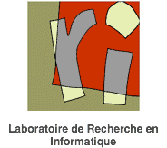
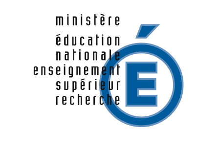

The Ninth Workshop on
|
General information |
Call for communications |
Practical information
List of posters |
List of talks |
Abstracts |
Schedule |
Group photo |
Other photos

January 16 - 20, 2006
Quantum information processing is the recasting of computer science in a quantum mechanical framework. It improves on classical computers and classical complexity bounds by making use of quantum mechanical phenomena. After Peter Shor's 1994 discovery of efficient quantum algorithms for factoring and the discrete log (threatening current "classical" cryptography), the field has grown explosively and is now one of the most active subfields of both computer science and physics. QIP 2006 is the ninth workshop on theoretical aspects of quantum computing, quantum cryptography, and quantum information theory in a series which started in Aarhus in 1998 and was held last year at the MIT.
The program of QIP 2006 will be organized somewhat differently from the previous QIP workshops. Besides a reduced number of 45 minutes invited talks there is a Call for Communications for long (30 minutes) and short (10 minutes) contributed talks. The invited and the contributed talks will be chosen by the program committee. During the workshop there will be also a display of posters and a business meeting.
Proposals for the poster session can be continuously submitted until December 9. Acceptance notification will be given promptly.
Important dates:
Local organizers:
Steering Committee:
| Charles Bennett | IBM, Yorktown Heights |
| Harry Buhrman | CWI, Amsterdam |
| Isaac Chuang | MIT, Cambridge |
| Daniel Gottesman | Perimeter Institute, Waterloo |
| Keiji Matsumoto | NII, Tokyo and JST, Tokyo |
| Michele Mosca | University of Waterloo and Perimeter Institute, Waterloo |
| Michael Nielsen | University of Queensland, Brisbane |
| Miklos Santha | CNRS LRI, Orsay |
| Umesh Vazirani | UC Berkeley |
For any questions concerning the event, contact
Sponsored in part by:
IBM Research  CNRS/GDR Information
et Communication Quantique
Action soutenue par la région Ile de France
Previous QIP workshops: